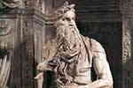

Um dos maiores sites
de arte da internet.
Escultura
A três graças, |
Afrodite de Cnido, |
Urna funerária, |
Santo Amaro, |
Discóbolo, |
Pietà, |
 Moisés, |
Busto de Amenhotep III, |
Dante ao voltar do exílio, |
Graça, |
Modelo em repouso, |
O beijo, |